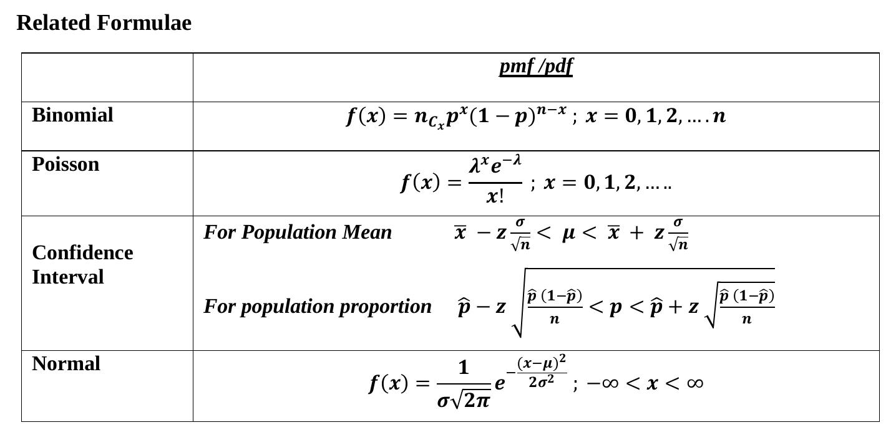
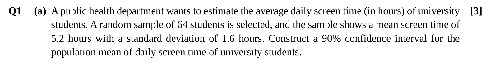
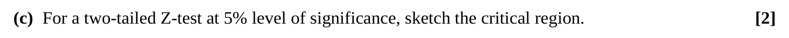
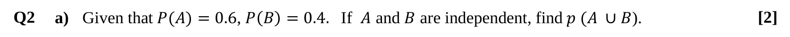
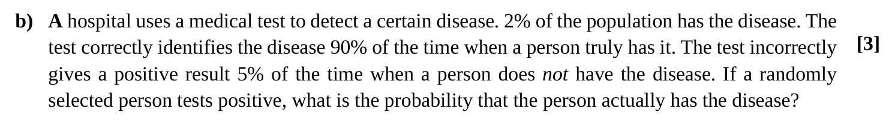
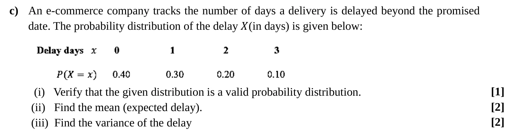
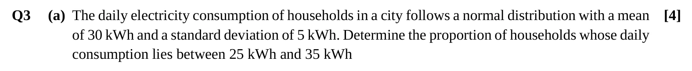
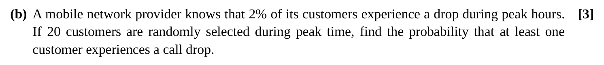
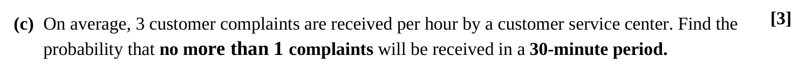
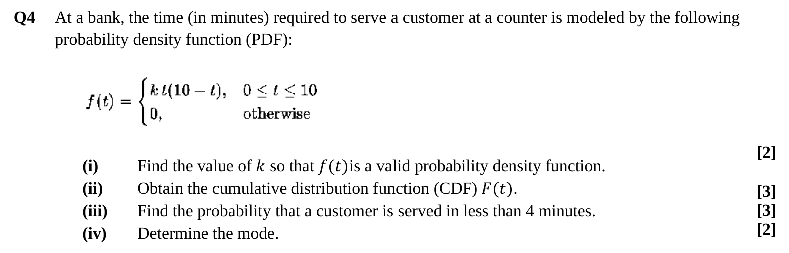

Final Exam, Fall 2025 — Solved
The Fall 2025 (trimester 253) MATH-2205 final: 40 marks, 2 hours, answer every question. Each question is shown exactly as it appears on the paper, with a full worked solution behind a dropdown. For real practice, sit it under timed conditions first, then check.
Every solution uses the class notation, and hypothesis tests follow the six steps from Unit 10. Also solved: the Summer 2025 final.
What the Exam Gives You
The paper prints only these formulas:

Not printed, but needed on this paper: the independence and addition rules, Bayes' theorem, \(E(X)\) and \(\text{Var}(X)\), \(Z = \frac{X - \mu}{\sigma}\), the test statistic \(z = \frac{\bar{x} - \mu_0}{\sigma/\sqrt{n}}\), the z-values (1.645, 1.96, 2.326, 2.576), and how to find \(k\), the cdf and the mode of a pdf. They're all on the Final Cheat Sheet.
Question 1 — Estimation & Hypothesis Testing
Q1(a) — Confidence Interval for a Mean [3]

Show solution
Build the interval exactly like class: find \(z\) for 90%, work out the margin of error \(c\), then step \(c\) down and up from \(\bar{x}\).
The 1.6 is the sample standard deviation, but \(n = 64\) is large, so we can use it in place of \(\sigma\) and still use \(z\).
90% in the middle leaves 5% in each tail, so look up 95%:
\[z_{95\%} = 1.645\]Q1(b) — One-tailed Test for a Mean [5]
![(b) A factory produces rechargeable batteries that are advertised to have an average lifespan of more than 80 hours. To verify this claim, a quality control analyst randomly selects 16 batteries from the production line. The test results show that the batteries have an average lifespan of 82 hours with a standard deviation of 4 hours. Assuming that battery lifespans follow a normal distribution, test at the 5% level of significance whether there is sufficient evidence to support the manufacturer's claim that the population mean lifespan exceeds 80 hours. [5]](img/final253/q1b.webp)
Show solution
Assume the batteries last exactly 80 hours on average. How unusual would a sample mean of 82 be? If it's rarer than 5%, that supports the claim that they last longer.
The claim is “more than 80 hours”, so it goes in \(H_1\):
\[H_0: \mu = 80 \qquad H_1: \mu > 80\]\(\alpha = 0.05\), one-tailed (right), because the claim is “more than”.
Using the rejection region instead: right-tailed at 5%, reject if \(z > 1.645\). Here \(z = 2.0\), which is in the rejection region.
\(0.0228 < 0.05\), so there exists sufficient evidence to reject \(H_0\).
At the 5% level, there is sufficient evidence to support the manufacturer's claim that the mean battery lifespan is more than 80 hours.
Strictly, with \(\sigma\) unknown and only 16 batteries, a textbook would use a t-test: \(t = 2.0\) with 15 degrees of freedom, critical value 1.753, p ≈ 0.032. That gives the same decision. Your course and this paper only use \(z\), so the z-test above is what's expected.
Q1(c) — Sketch the Critical Region [2]

Show solution
“Two-tailed” means extreme results in either direction count against \(H_0\). So the 5% is split into two halves, 2.5% in each tail.
Each tail holds 2.5%, so the area to the left of the upper cut-off is 97.5%:
\[z_{97.5\%} = 1.96 \qquad\text{so the critical values are } \pm 1.96\]To draw it in the exam: a bell curve centred at 0, cut-off lines at \(-1.96\) and \(+1.96\), and both tails shaded and labelled “rejection region, 2.5%”. Label the middle “acceptance region, 95%”.
Reject \(H_0\) if \(z < -1.96\) or \(z > 1.96\). Otherwise there is insufficient evidence to reject \(H_0\).
Critical region: z < −1.96 or z > 1.96 (2.5% in each tail); acceptance region −1.96 ≤ z ≤ 1.96Question 2 — Probability & Discrete Distributions
Q2(a) — Independent Events [2]

Show solution
“Independent” lets you multiply to get “both”. Then the addition rule gives “either” — remembering to subtract the overlap so it isn't counted twice.
Q2(b) — Bayes' Theorem [3]

Show solution
Of everyone who tests positive, how many are actually sick? Surprisingly few: 5% of the huge healthy group outnumbers 90% of the tiny sick group. So most positives are false alarms.
Let \(D\) = has the disease and \(+\) = tests positive.
\[P(D) = 0.02 \qquad P(+ \mid D) = 0.90 \qquad P(+ \mid D') = 0.05 \qquad P(D') = 0.98\]Q2(c) — Discrete Probability Distribution [5]

Show solution
A valid distribution needs every probability ≥ 0 and a total of exactly 1. The mean is \(\sum x\,p(x)\), and the variance is the mean of the squares minus the square of the mean.
| \(x\) | \(p(x)\) | \(x\,p(x)\) | \(x^2 p(x)\) |
|---|---|---|---|
| 0 | 0.40 | 0 | 0 |
| 1 | 0.30 | 0.30 | 0.30 |
| 2 | 0.20 | 0.40 | 0.80 |
| 3 | 0.10 | 0.30 | 0.90 |
| Total | 1.00 | 1.00 | 2.00 |
Every \(p(x) \geq 0\), and \(\sum p(x) = 0.40 + 0.30 + 0.20 + 0.10 = 1\). Both conditions hold, so it is a valid probability distribution.
Question 3 — Normal, Binomial & Poisson
Q3(a) — Normal Distribution [4]

Show solution
Convert both ends to z-scores, then the answer is the area between them. 25 and 35 are each exactly one standard deviation from the mean, so expect about 68%.
\(X \sim N(30, 5^2)\), so \(\sigma = 5\):
\[z_1 = \frac{25 - 30}{5} = -1 \qquad z_2 = \frac{35 - 30}{5} = 1\]Q3(b) — Binomial: “At Least One” [3]

Show solution
“At least one” covers 1, 2, 3, … all the way to 20 — far too many cases. The opposite is just “none”, so work that out and subtract it from 1.
Fixed number of trials (20 customers), each a drop or not, \(p = 0.02\):
\[X \sim B(20, 0.02)\]Q3(c) — Poisson with a Rescaled Rate [3]

Show solution
The rate is given per hour, but the question asks about 30 minutes, so halve it first. “No more than 1” means 0 or 1 complaints.
Question 4 — Continuous Random Variable [10]

Show solution
Same routine as Unit 09: total area = 1 gives \(k\); integrating from 0 up to \(t\) gives the cdf; the cdf gives probabilities; and the mode is where the curve peaks, where \(f'(t) = 0\).
For \(0 \leq t \leq 10\), \(t(10 - t) \geq 0\), so \(f(t) \geq 0\) as long as \(k > 0\). Now set the total area to 1:
\[\int_0^{10} k\,t(10 - t)\,dt = k\int_0^{10}(10t - t^2)\,dt = k\left[5t^2 - \frac{t^3}{3}\right]_0^{10} = k\left(500 - \frac{1000}{3}\right) = \frac{500k}{3}\] \[\frac{500k}{3} = 1 \quad\Longrightarrow\quad k = \frac{3}{500} = 0.006\]Check: \(F(0) = 0\) and \(F(10) = \frac{1500 - 1000}{500} = 1\). ✓
\(f''(t) = -2k < 0\), so this is a maximum. The mode is 5 minutes. (The curve is a parabola symmetric about \(t = 5\), so the mean and median are also 5.)
(i) k = 3/500 = 0.006 · (ii) F(t) = (15t² − t³)/500 on [0, 10] · (iii) 0.352 · (iv) mode = 5 minutes